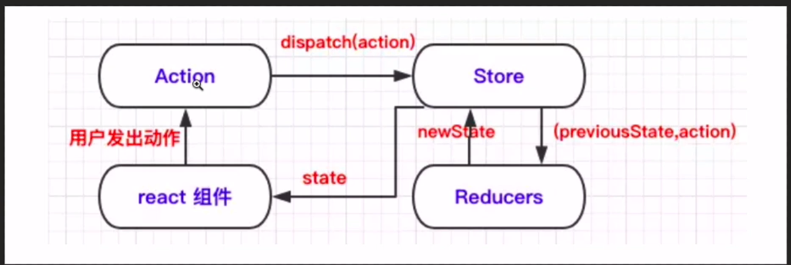

Redux快速入门
什么是Redux?
props 一级一级
state 组件内部状态管理
react->单向数据流
数据状态非常复杂->很难让两个组件进行通信->解决:把所有的state集中的组件的顶部->redux。集中管理组件的状态，数据仓库
redux:js状态容器，提供可预测化的状态管理
react和redux是没有任何关系。redux就是一个独立的状态管理的库。(mobx状态管理库)
store->state tree->改变state的唯一方法storedispatch触发一个action->reducer完成state更新。组件可以派发dispatch action行为派发给store,其它组件可以订阅store中的状态state来刷新自己的视图
要点:应用中所有的state都一个对象树的形式存储在一个单一的store中，唯一改变state的方式是派发action，
action:一个描述发生了什么的对象，动作，行为 reducer:为了描述action如何改变state树
Redux的好处
props，单向数据流，一级一级
Redux解决的问题
多级传递数据的痛苦
相邻组件的数据传递->parent顶层组件，connect函数react和redux的连接
redux可以将数据连接到任何组件
connect函数
Redux的使用场景
公共组件，业务组件非常多，用户使用方式比较复杂，项目庞大
不同用户角色权限管理
需要与服务器大量的交互，聊天，直播等应用
view需要从多个来源获取数据
react解决不了的，多交互，多数据源，使用redux
注意：不要盲目引入redux，只会增加复杂度
Redux是如何工作的
三大核心
action：描述发生了什么的一个对象，动作，指令，type {type:’add’ },单独的模块，文件来存放action（项目规模变大后），dispatch(派发，分发)
**reducer:**数据控制器，数据的修改者，action.type,具体做什么，返回一个newState
指定了应用状态（state）变化如何响应action并发送到store
注意： 保持reducer纯净 ，纯函数，固定的输入一定有固定的输出。
只要传入的参数相同，返回计算得到的下一个state一定相同
副作用：ajax请求等
**store:**数据仓库，
getState() 获取state
dispatch(action) 更新state
redux只有一个单一的store
进行拆分数据处理逻辑–>不应该拆分reducer，->combineReducers
使用的一般过程
创建reducer
创建action
创建store

Redux的三大原则
1.单一数据源
store可以理解为全局变量对象
2.state是只读的
唯一改变方法是触发action，可以确保视图和api请求都不能直接修改state，只能表达想要修改的意图，只能通过action，在reducer中进行集中化的处理
3.reducer中使用纯函数执行修改。
为了描述action如何改变state，
实际应用
副作用操作：
Redux-thunk,进行不纯的操作
thunk action
npm i redux-thunk
安装：npm i redux ，npm i react-redux
react-redux是react内置的，不是redux的，主要起到一个连接的作用
reducer: if(action.type==’ADD’){ }else if { }
switch 应用场景比较简单
场景复杂，创建一个对象通过action的type来查找对应的处理函数
【17.35】
import React from 'react';
import {connect} from "react-redux";
import { add,reduce } from "../store/actions";
//函数 ,用于建立组件和store的state的映射关系，可以改名字，一般叫这个
function mapStateToProps(state){
return{
count:state.count
}
}
class ReduxCounter extends React.Component {
handleAdd=()=>{
this.props.dispatch(add());//this.props.dispatch({type:ADD});
}
handleReduce=()=>{
this.props.dispatch(reduce());//this.props.dispatch({type:REDUCE});
}
render(){
return (
<div>
<h3>我是ReduxCounter组件</h3>
<div>
<button onClick={this.handleAdd}>加1</button>
<span>{this.props.count}</span>
<button onClick={this.handleReduce}>减1</button>
</div>
</div>
)
}
}
//传入mapStateToProps这个参数后，组件便会订阅store中状态的变化
//connect是一个高阶函数，传入mapStateToProps后返回一个函数，高阶组件
//state和dispatch都映射了
export default connect(mapStateToProps)(ReduxCounter);
|
import React from "react";
import store from "../store/index";
import { Provider} from "react-redux";
import ReduxCounter from "./ReduxCounter";
//connect函数 provider组件
class ReduxComponent extends React.Component {
constructor(props){
super(props);
this.state = {
count:0
}
}
handldAdd=()=>{
this.setState({count:this.state.count+1})
}
handldRedux=()=>{
this.setState({count:this.state.count-1})
}
render(){
return (
<div>
<h3>我是counter组件</h3>
<div>
<button onClick={this.handldAdd}>加1</button>
<span>{this.state.count}</span>
<button onClick={this.handldRedux}>减1</button>
{/* 要通过Provider包裹，不然state不会被传到子组件中来 */}
<Provider store={store}>
<ReduxCounter />
</Provider>
</div>
</div>
)
}
}
export default ReduxComponent;
|
import { createStore } from "redux";
const initialState ={
count:0
};
//store需要一个reducer
//(state,action)=new State
//唯一要点：当state变化时要返回全新的对象，而不是修改传入的参数
//必须是纯的，遵守redux原则
function reducer (state=initialState,action){
console.log('reducer',state,action)
switch (action.type){
case "ADD":
return {//不能直接修改state参数，satate.count++;只能通过return的方式返回新的state
count:state.count+1
};
case "REDUCE":
return {
count:state.count-1
};
default:
return state;
}
return state;
}
const store = createStore(reducer);
/* store.dispatch({type:'ADD'});
store.dispatch({type:'REDUCE'});
store.dispatch({type:'REDUCE'}); */
//创建store存放应用状态
export default store;
|
action处理方式：
放在一个单独的action.js中，推荐
大写的一般认为是常量：约定俗成的一种规范，比如ADD,REDUCE
//actions.js export const ADD='ADD';
export const REDUCE='REDUCE';
export const add=()=>({type:ADD});
export const reduce=()=>({type:REDUCE});
|
使用的时候直接：this.props.dispatch(add()); this.props.dispatch(reduce());
如何把dispatch也应射进去？
const mapDispatchToProps={
add,
reduce
}
export default connect(mapStateToProps,mapDispatchToProps)(ReduxCounter);
this.props.add();//this.props.dispatch(add())
import React from 'react';
import {connect} from "react-redux";
import { add,reduce } from "../store/actions";
//函数 ,用于建立组件和store的state的映射关系，可以改名字，一般叫这个
function mapStateToProps(state){
return{
count:state.count
}
}
const mapDispatchToProps={
add,
reduce
}
class ReduxCounter extends React.Component {
handleAdd=()=>{
this.props.add();//this.props.dispatch(add()) //this.props.dispatch({type:ADD});
}
handleReduce=()=>{
this.props.reduce();//this.props.dispatch(reduce())//this.props.dispatch({type:REDUCE});
}
render(){
return (
<div>
<h3>我是ReduxCounter组件</h3>
<div>
<button onClick={this.handleAdd}>加1</button>
<span>{this.props.count}</span>
<button onClick={this.handleReduce}>减1</button>
</div>
</div>
)
}
}
//传入mapStateToProps这个参数后，组件便会订阅store中状态的变化
//connect是一个高阶函数，传入mapStateToProps后返回一个函数，高阶组件
//state和dispatch都映射了
//mapDispatchToProps作为第二个参数传入
export default connect(mapStateToProps,mapDispatchToProps)(ReduxCounter);
|
https://github.com/xjj1573/myreact-demo